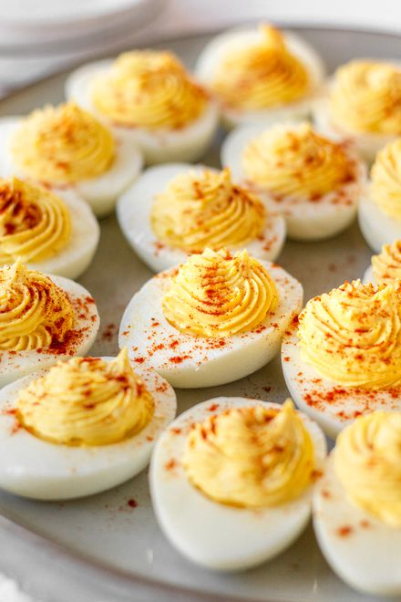

Deviled Eggs
Deviled Eggs
Index Page

Description
This is a standard deviled egg recipe I copied off the internet.
There's not all that much else to say
Ingredients:
- Eggs --> 6
- Mayonayse --> 1/4 Cup
- Vinegar --> 1 tsp
- Mustard -->1 tsp
- Salt --> 1/8 tsp
- Pepper --> to taste
- Paprika --> For Garnish
Steps:
- Place eggs in a single layer in a saucepan and cover with enough water that there's 1 1/2 inches of water above the eggs. Heat on high until water begins to boil, then cover, turn the heat to low, and cook for 1 minute. Remove from heat and leave covered for 14 minutes, then rinse under cold water continuously for 1 minute.
- Crack egg shells and carefully peel under cool running water. Gently dry with paper towels. Slice the eggs in half lengthwise, removing yolks to a medium bowl, and placing the whites on a serving platter. Mash the yolks into a fine crumble using a fork. Add mayonnaise, vinegar, mustard, salt, and pepper, and mix well.
- Evenly disperse heaping teaspoons of the yolk mixture into the egg whites. Sprinkle with paprika and serve.